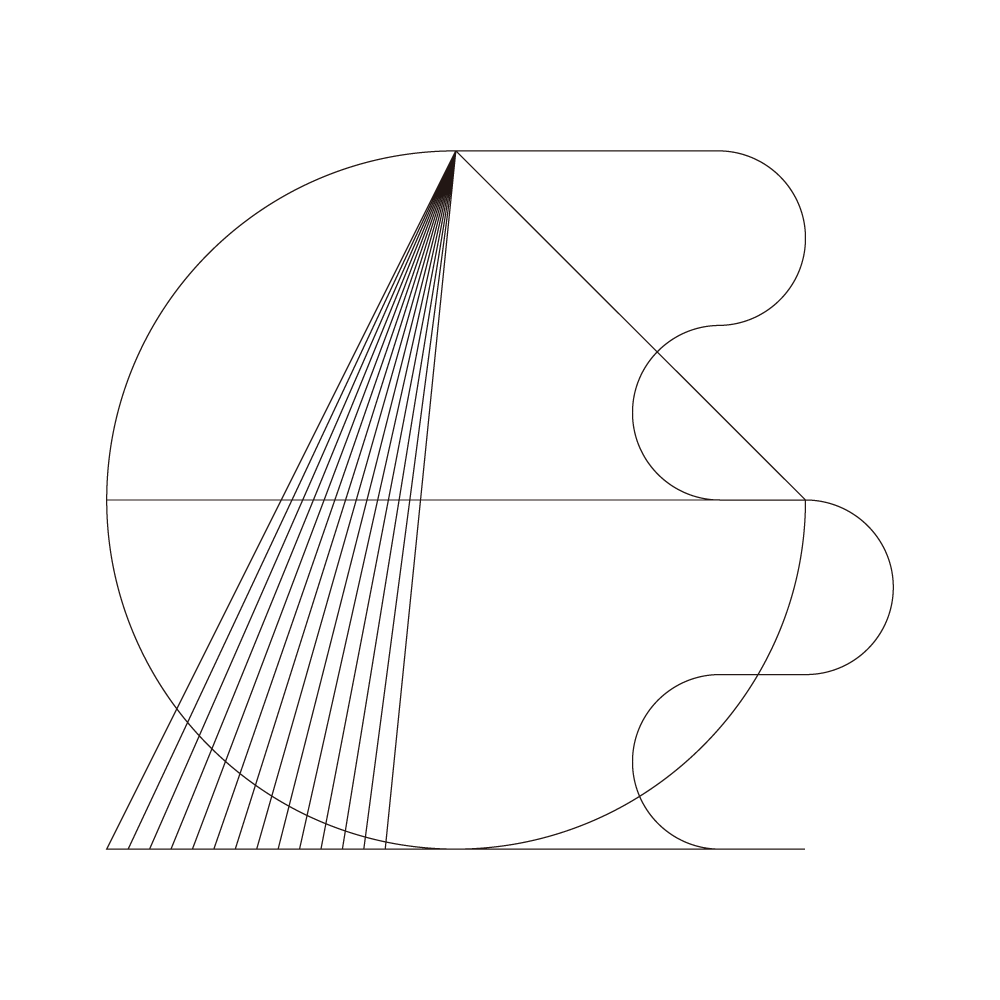
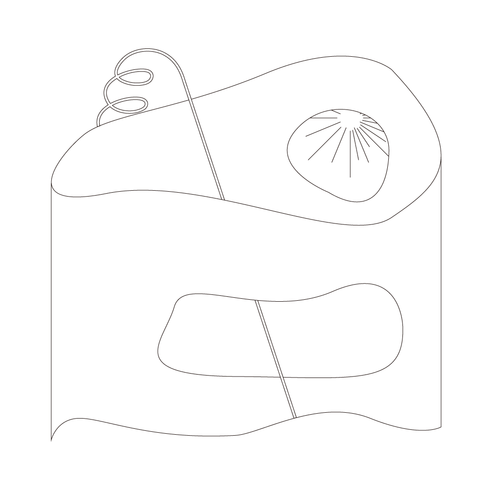
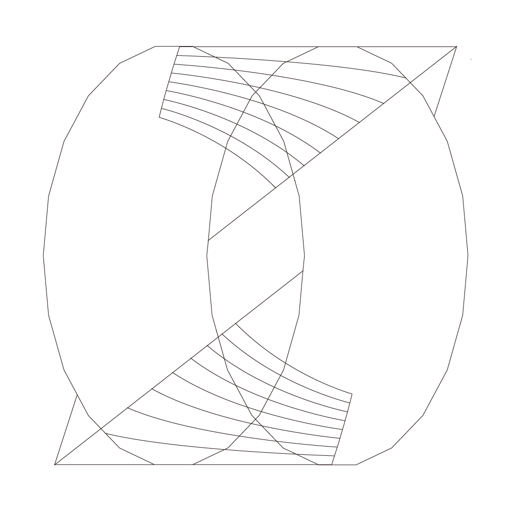

In her piece "A Drop of Love in the Cloud," (2018) artist Fei Liu writes about the like/heart button as a
flattening affordance of giving affirmation and love. The text-editor provides a much more expressive input. But
even people who can't communicate well because of language barriers can express love through actions, like
cooking food. Can we create other "love inputs" that might allow us to "reach across the chasm of a seamless
signal"? What is expressing "real" love or affirmation about? Is it about effort, thoughtfulness, generosity,
something else? What might a thoughtful or generous interface feel or behave like?
Vicky Blume
Good love takes on a life of its own, with the potential for exponential growth (like a petri dish full of
mold). I imagine if someone quantified and mapped the dialogue we have with loved ones on our phones, it would
look like oscillating, exponential growth.
I find that virtual exchanges take on a different (but not inherently less intimate) tone when there are
indications that “_______ is typing” or “_______ is online.” The three bouncing dots on iMessage don’t really
have an IRL equivalent, because taking the time to think about and respond carefully to someone in a spoken
conversation would be considered too “slow” or stilted. The stepwise quality of online messaging is more
reminiscent of writing letters—sending one, knowing they’re reading it, anticipating their reply. I think
writing is good at reaching “across the chasm of a seamless signal” because it recognizes that the chasm is
there (because two people will always need to translate and transmit their signals to one another), while
allowing you to take comfort in knowing that the other person is out there, reading your words in their head.
The “_______ is typing” dots are unencumbered by the politics of social media because they’re a passive
signifier of attention: the tech does it for you, so it’s an unusually honest message that “_______ is alive
and mentally present for you.” It reminds me of the liveliness of editing a website continuously after it’s
been published, because there’s evidence of activity, like a small pile of rubble outside of a frenetically
active ant colony. Typing and code-tinkering and ant-hill-burrowing are some of the most laborious things I
can think of, but connecting and creating and exploring do require a special kind of attention.
Dear Vicky,
I wonder about the real life equivalents of the three dot typing signal. The first thing I thought of was
someone running at you while you’re playing tag, almost like they’re typing the word “tag” while chasing
you and clicking send once they tag you. I also appreciate conversations where you can see the three dots
on someone’s face while they construct a response. The care with which you plan a written response could
be applied to in-person conversations: as an experiment, it would be fun to model the pacing of a real
life conversation after that of a text conversation. What would that look like? Taking 30 seconds to think
before you speak?
<3
Julia Ma
To me, physical contact is the purest way to communicate love. When I moved to Yale almost four years ago, my mom’s hugs were the thing I missed most, even more than her cooking. Even though I called home every night for the first month of school, those conversations could not compensate for the lack of her embrace.
I remember when I first got on Tumblr, I recognized how users would communicate and care for each other, even though they did not know each other in real life (or even know each other’s real names). Even though it was online, there were genuine friendships. This kind of communication between internet users is probably the closest to “real” love.
To me, clicking a heart icon or a thumbs-up icon comes nowhere close to sending “real” love. I don’t think humans are capable of translating numbers and data into emotions like love. A like on Facebook seems so much more distant and disconnected than a well thought-out Facebook comment. In fact, I think these hearts and thumbs-ups are actually sources of stress and anxiety. I’ve seen many of my friends obsess over the number of likes on their Instagram posts. It is this obsession that makes social media seem so unhealthy.
The pleasure we feel when our content does well does not feel the same as receiving love from our friends and family. Ultimately, I think it is very difficult to convey “real” love on the internet—that is, until we are able to send real and comforting hugs to one another through digital space.
Dear Julia,
Looking just at the number of likes you get can be a stressful process and might do the opposite of what giving a like should do. However, one thing that humanizes these quantified engagements is thinking about what each person who interacts with a post might have been thinking. Seeing a person I haven’t heard from for years like my post makes me feel thought of in a particular way; whenever the inverse situation occurs, I spend some time thinking about memories I have with that person. Though that pales in comparison to in-person reminiscing, the initial point remains to an extent.
<3
Mengyi Qian
When I was in school, love online was popular among us. I never had an “online relationship,” but I did have an IRL boyfriend. We were in the same school, different class. As our parents were quite strict, we barely had the chance to go out on dates, so text messages became our way of communicating. Expressing ourselves through words only sometimes caused misunderstandings—it was hard to know the other person’s mood or reactions without hearing a tone of voice, or seeing their face.
Personally, I hate being misunderstood. It’s important to me to be able to express my feelings precisely, and communicate my messages completely. Expressing love is important to me because without it, I cannot establish a connection and send signals with the people I love.
Long after I left school, I had similar moments of needing to express myself online. Things like emoji helped. We could put an icon in our messages to avoid misunderstanding, adding some fun into the dialogue along the way. Then we started to use those “stickers” for story telling (like memes), replacing entire sentence. I always considered emoji and stickers as great inventions of modern life… until some of the emoji, like the smiling face, started to have other meanings. Stickers became so overused that we started to lose the ability to express our love in language.
Emoji and stickers have developed into a whole new modern language. With emoji, üòÄ means happy and üò≠ means sad. However, human emotion enjoys a much larger, and more nuanced, range. So we start to have faces like üòïüôÅ‚òπÔ∏è to indicate a degree of sadness precisely. As this language developed, even the simple smiling face üòÉ took on different meanings, depending on the context:
with my mom
super happy, love you
with strangers or new acquaintances
being polite and friendly
with close friends around my age
I'm mad at you / your dumb ass
This is actually how language should be: a living, evolving thing that shifts with use. But then, the same question comes up over and over again: How can I accurately express my feelings in this ever-changing language?
Stickers can be more precise as a language because they are more variable and complicated (also, because sometimes texts are already embedded in stickers, combined with moving images). Similar to text language, with stickers there is a right choice and right order to send them in. With this, too, I would use different styles when talking to different people.
When expressing love, there seems to be a series of gradual degrees:
Level 1
a heart emoji
Level 2
a hug/kiss emoji
Level 3
lots of hearts/hugs/kisses (repeating)
Level 4
an image of heart (stylized, beyond default)
Level 5
a still image of a hug/kiss
Level 6
a moving image of a hug/kiss (dynamic)
Level 7
a moving image of other actions (e.g. beating you?) (more personal)
There are so many easier ways to express love in this modern language. I like using stickers, but at the same time I realize we are overusing them. Like currency, this language has been devaluated.
So, where should we place the method of just saying: “I love you”?
Level ?
Saying “I love you”
I consider it a higher level compared to all the expressions. We are sending virtual love to anyone with a simple click. As a result, actually saying “I love you” seems to be most sincere, strong, and real.
Dear Mengyi,
I like the idea of “dialects” of emoji coming from this discussion. Though these dialects might not necessarily define themselves in the same way lingual dialects do, cultures of the internet give these symbols connotations that evolve. Certain emoji get used in specific types of memes where suddenly their meaning is associated differently. I’ve noticed this most with the use of emoji in older generations. Stickers do convey more nuanced messages in their depictions, but it’s interesting thinking about the “emoji homonyms” and the ambiguity that can go into using emoji.
<3

Herdimas Anggara
When I was in undergrad, I selectively chose which Facebook posts to “like” based on how interesting they were to me personally. In practice, this meant that if one of my peers had just opened a business and invited me to like their page, but I found it to be uninteresting, I would just silently leave it unread. Later on, I asked myself, “Why can’t you be supportive to your friends? Is there any harm in liking their pages?” Sure, they have the potential to clutter my feed, but now with the mute button, I can decide exactly how much attention I want to distribute to them.
Maybe this is only applicable to Facebook, which happens to be the lowest common denominator when it comes to social medium. Facebook friends span all different demographics, from your best friend with whom you always exchange memes to your mother, who randomly likes your posts from back in 2009. Then there’s your work colleague, who harbors a deep-seated hatred against queer people. It becomes exhausting to see groundless anti-LGBT articles pop up on your timeline from people you initially thought were progressive. Because of how omnipresent Facebook can be in people’s lives, it makes me want to apply strict rules in navigating and curating the social media.
All of which leads me to Instagram.
I didn’t have it until I arrived here. Since now I’m a world apart from my close friends, documenting my mundane activities through Instagram is my way of sharing my experiences with them. However, recently I noticed that my new friends at Yale started liking my posts that I had initially curated specifically for my Indonesian friends. Did they do it out of politeness, or out of genuine interest? Either way, it gave me a new insight into how to approach the moral quandary that I laid out in the first paragraph: What if I just like all of my friends’ posts equally? That way, it provides a win-win situation. I don’t have to decide whether their posts immediately sparked my curiosity or not; I can always look at them again later. This doesn’t necessarily mean that I’m completely turning off my emotions altogether. When I’m genuinely drawn by the content, I usually leave a comment or send a text to the poster. Because of how automated social currency is in the age of social media, expressing interest by engaging with the other person through a written message feels more real for me. It’s akin to, “Hey, I care about what you do/make/feel. I see you, and I hope this bit of text can make your day better!”
Dear Herdimas,
Online social etiquette can be tricky simply because there are more potential instances of interaction online than in person. People don’t always consider the access they have to populating others‘ feeds, so it’s good to be deliberate when choosing whether or not to continue to engage with someone. I find it gratifying to unfriend or unfollow people I am decidedly uninterested in engaging with. But some people have apps for tracking who’s unfollowing them! Recently I was accosted by someone I unfollowed and it reminded me of exactly why it was that I unfollowed them. Follow and like as you please, I say.
<3
Sunnie Liu
“You probably don’t need to know this, but recently I’ve been kinda sorta developing a decent sized crush on you, and I kinda sorta have no idea what to do about that. I hope telling you isn’t awkward, and I have no intentions to act upon it, but it is a thing that exists,” confessed Justin.
Heartbeat racing faster than a NASCAR driver on the Daytona 500, I started to type out a paragraph on my computer before deleting the overly-revealing message and favoring a short and sweet response instead.
‚ÄúThank you for your honesty, and don‚Äôt worry: the feelings are mutual üòâ,‚Äù I replied.
That Facebook Messenger conversation marked the beginning of my first relationship. But that fateful night a week before high school started was the cumulation of a summer of maximum teenage angst and pseudo-intellectualism. Our daily long, “deep” conversations over complete sentence Facebook messages with perfect grammar included discussions on the meaning of our existence, the ideal form of governance, my struggle with self harm, and Justin’s grappling with his father’s death. We also posted a series of dark artwork and musings—on everything from humanity’s obsession with rarity to the purpose of emotions to the “real” difference between pessimism and realism—onto our joint Wordpress blog named after our online pen names “Jinlau & Axiom,” which garnered around 140 followers.
While our relationship only lasted six months and mostly remained online despite the fact that we attended the same high school, I will always remember the virtual haven we created for ourselves—where a lonely goth girl who never missed a Vans Warped Tour and a nihilistic boy who tried to start an ironic “Anti-social Club” bonded over their mutual depression, introversion, and misanthropy on Facebook Messenger and Wordpress.
Ostracized by society—especially by our conservative, traditional Asian American families and Christian private school in Texas—for having eccentric tastes and mental health issues, Justin and I resorted to finding our place within online communities. Outcasts like us may have faced isolation and judgment from the real world but could encounter a sense of belonging in the virtual worlds of Myspace, Tumblr, and Wordpress. On the internet, angsty emo teenagers came across others who “finally understood them,” people who seemed more open to having deep conversations on philosophy, religion, and mental health instead of small talk.
The design of the internet encourages interaction, exploration, and expression through relatable posts, instant messaging, and self-published artwork, providing the perfect concoction for sub-cultures and interpersonal relationships to brew. Armed with the freedom of expression and ability to connect with people from all around the world, outsiders from real life communities could finally find acceptance and empowerment in online safe spaces. However, as the internet perpetually changes with events like the decline of Myspace and the current mass exodus of users from Tumblr, outcasts also must constantly discover new virtual refuges. This challenge proves especially difficult considering humankind’s ever-changing relationship to technology. While Myspace may have served as a perfect virtual haven in the 2000s and Tumblr in the 2010s, as we near the 2020s, a new platform may have to arise to fill in the missing niche.
Dear Sunnie,
We usually take “knowing someone” to mean that we have hung out with them before, or we work together, or we play ping pong together on the weekends. Yet with the advent of the internet, knowing someone can mean we post to the same blog or we both follow each other’s finsta (Fake Instagram). Meeting a person that makes you feel a sense of belonging can occur through either channel—real life or online—but the accessibility of the internet makes it easier to find not just one person who’s likeminded, but a community of them. Though your mode of interaction online might be more limited than seeing someone in person, the sense of belonging is more important at times.
<3
Adam Moftah
In thinking about the internet as a mode of expressing love, I immediately associate it with the idea of the five love languages (words of affirmation, gifts, acts of service, quality time, and physical touch). When it comes to in-person interactions, these languages are fairly intuitive to employ and understand, but on the internet they become more nuanced. Something like quality time could manifest through a video chat, for instance, but for some reason that sort of quality time seems to pale in comparison to the quality time of playing a board game with someone. What this then seems to suggest is that there could be different “dialects” of these love languages that get translated through the internet.
One instance of a love language dialect is the process of sending memes, tagging people in posts, and other sorts of similarly specific digital interactions. Liking “Wholesome Birb Memes” and tagging a loved one in a post such as this is an avenue of affection that we don’t completely understand yet. Opening Facebook and seeing a loved one tag you in a post makes you feel thought of in a genuine way; though the act of tagging someone is simple, the longer sequence of a person going through their day, seeing something on their phone or laptop, thinking of you, and then deciding to tag you makes the internet and the associated technology seem less lonely.
I think that there are some parallels here in terms of loneliness, non-loneliness, seeming interconnectedness, and true togetherness. People have always felt lonely and non-lonely, but with things like the internet and cheap data plans, we are able to constantly talk to people, show what we’re doing, and see what others are doing. It feels like we’re all in a special virtual room where we can see portals into each other's lives—but in reality, a lot of us are just in our rooms alone looking at things on our screens. When we get things like tags in posts, we see people talking at us through these portals. Though we’re still alone, it feels less lonely. When we talk to each other online, we can express love through direct conversation, support on posts, and other means of creating connection without being in-person.
I realize that my focus has been on isolation and loneliness instead of love directly, but I think that that’s mainly just a product of how some might relate to love in an increasingly digital life. When I am able to feel loved, and not just cared for, it’s also when I feel the most un-lonely. I think the default state of being on the internet is loneliness, but if we can breach this loneliness with modes of interaction, we are closer to expressing love. Though we might just be seeking a lack of loneliness in in-person interactions as well, the internet offers a unique way to mediate the (more lonely) time we spend away from people.
Dear Adam,
It might be helpful to consider a different perspective on what alone time can be. The time we spend away from people does not necessarily need to have a “more lonely” assignment. Thinking of loneliness as an objective or quantitative measure of time spent with others may lead one to think that being away from people = more loneliness. However, loneliness is not quantitative or objective, and sometimes spending time away from people is important for feeling connected. It can lead to independent reflection and progress, and does not necessarily need to carry a negative connotation.
<3
Vlad Vykhodets
From the standpoint of interfaces, I think love is something that makes us feel less alone as users. It could be a set of features that allows users to communicate, or it could be an interface itself that interacts with the user.
The first one is fairly straightforward: a chat, a comment section, a like button. However, there are many other, perhaps more niche ways, for people to communicate that are still not explored. As an example, when I was product director at Fyrno, a social music discovery app I co-founded in 2016, our goal was to provide more ways for our users to communicate with music. One of the features we came up with is a novelty in notifications: every time a friend likes the same song as you, both of you get notified. We thought this would allow people to get to know each other better through music and could potentially lead to music-related conversations both inside and outside the app. Thus, a process of listening to music or music discovery, which is oftentimes isolated in today’s realm, can become socially engaging and bring affirmation that our music tastes are shared by someone we know.
As for the interfaces, expression of love is still a “Wild West.” Microsoft tried and failed with the infamously annoying Clippy about 20 years ago. Since then, very few thought about personal assistance until the technology and paradigms in HCI caught up and we’ve seen the surge of Siri, Alexa, and chatbots. However, I think that interfaces that in one way or another emulate human interactions (thus both aiding our workflows and keeping us company) are the future of HCI. I have been working on a concept of an AI-aided interface for over a year now, and its possibilities are very exciting. What if your design software would respond to your actions with suggestions on how to improve your design? What if your presentation software would analyze your copy and provide suggestions for the most effective communication?
The newest advancements in AI allow us to bring human interaction experiences and integrate them into digital products. In particular, it can automate tedious processes, provide a responsive workflow that engages with the user, and allow people to achieve better productivity. In my view, the job of an AI assistant is to guide a user and reduce ambiguity of choice. An interface should no longer be just a tool, but become a collaborator. It should simplify decision making and help with productivity tasks, thus communicating to a user that they are not alone.
As with any craft, you can see love and care put into an interface. With the best interfaces, every single detail is thought through. It is always inspiring for me to see when designers who worked on an interface really strived to make my interaction process simpler and more pleasant. It establishes an invisible connection between me, a user, and creators. I think attention to detail and care about the user are the ultimate expressions of love through a design object.
Dear Vlad,
This relates well to a previous entry’s discussion of loneliness in relation to love. I think the overlap between what makes people to feel connected to other people through technology and what makes people feel connected to the technology itself is an interesting thing to examine. Microsoft’s Clippy may have been a somewhat personified/anthropomorphized assistant, but its ineffectiveness made us feel isolated from it. On the other hand, programs that give out quiet dialogue messages that are actually helpful tend to make you feel more cared for, or at least feel more considered. Care, consideration, and love all seem to intersect at this point.
<3
Betty Wang
I am struck by and smitten with the term “love input,” a wholesome way of describing what was once a well-intentioned and meaningful facet of social connection in the digital sphere—one that turns cold, mechanical, empty.
Vectorized, commoditized, infinitely scalable, replicable, abstracted love.
Increasing in ease, in quantity love. Diminishing in value love.
In what other ways can we imagine the giving and receiving of what was already hard to convey, intangible, and complicated in the physical world? Is there no other way to embody all of the nuance of romance, of love, of intimacy, of desire, than the reductive, repetitive motions of selecting a prescribed response, and scrolling past? In college I confessed my love to an english professor during his office hours by talking about how interesting I found it that Sanskrit has 96 words for love—he was doing his PhD in english translation at the time so I thought this was both apt and coy. I thought it was safe to confess this because it was supposed to be his last semester teaching, until he announced a new post-colonial lit class the following semester. I was mortified but I took the class anyway. Lesson learned: I played myself.
But I digress. How can we pour more of ourselves into digital interactions that seem so limiting? Limiting in character limit, limiting in agency. Every second you spend thinking has an opportunity cost of another image seen, another life consumed, another image liked, another life loved. What other ways can we organize relationships on screen? The exchange of emotion? A give and take process. In what ways do the options we have now seem so lacking, so futile, that we must consider alternatives to interactions that no longer hold much weight?
How can we design a world with a different gravity?
At this point I have more questions than answers.
Maybe the only thing I can say with any conviction right now is that providing a limited selection of reactions might make for an abundance of quick, impulsive responses—an immediate indication of engagement—but attempts to capture too much in very little results in the erasure of a certain nature of human emotion: complexity. The reality that you can hold contradictory feelings at once.
In terms of solutions, I have only curiosity: how do we invite effort, thoughtfulness, generosity, but also honesty, compassion, intimacy, and vulnerability into a space devoid of touch, of warmth, of eye contact? Are there ways to simulate safety? Are there ways to design aura into interfaces that can be so easily left, so easily exited—the abandonment of a room that only existed for you, and will always wait for your return?
Dear Betty,
I’m entertained by this anecdote because it feels almost ironic that the point you made was about the quantity of words of love. This ancient, un-digital language seems almost opposite to the limited array of love inputs we have on something like Facebook, for instance. Though on Facebook there are a number of other ways to express love for someone—poking them, love-reacting to their photos, posting on their wall—there still seems to be an insurmountable wall for “true” connection. However, perhaps there are ways for us to climb this wall; or maybe merely trying to climb the wall with someone shrinks the size of the wall in the first place. Perhaps a newly designed system of gravity will change the way we understand walls.
<3
Anna Sagström
Proposals for loving interfaces.
A website that moves closer.
A website that breathes.
A website with a warm temperature, that beams through your fingers.
A website with soft buttons made of clay.
A website with the consistency of a stress relief ball.
A website with a cursor that sends more love the longer you hold it down.
A website that sends messages before they are fully written.
A website that upwraps.
A website that scrolls slower or at the same tempo as your partner’s or friends’. To move and touch at the same tempo and care.
A website that’s designed for lying in bed.
A website that can’t see and can’t listen.
A website that’s rusty but it’s ok.
A website that hymns.
A website that’s your own little shared network.
A website that’s someone else’s music.
A website that’s a video-screening of art for alone dinnertimes.
A website that’s full of (synthetic) down, flowing around.
A website that’s a hand you can hold.
A website that you can tell you got home safe, and that wakes you up in the morning with an image to say how happy it is that you got home safe.
A website that’s a ride in the backseat while someone you love is playing the radio and driving, and you get to fall asleep in the back.
A website that isn’t overly confident but gets nervous too.
A website that scrolls from top left to bottom right, because you want it to, and maybe someone else wants it to, too.
Dear Anna,
Maybe websites can do and be all of these things. Maybe we just need to understand that websites live in a different world with its own languages. We might need to consider new dimensions to see that a website breathes over the course of periodic updates to its homepage, rather than with a respiratory system. Rust accumulates when libraries are updated and old code doesn’t work correctly, but it’s okay! A safe website is one that will remember all of your settings each time you go. A whole world of characteristics for websites to assume through non-linear, non-human trajectories.
<3
Tommy Huang
Expressing “love” through a digital input certainly is tough. A like, a favorite, whatever—it doesn’t really mean anything anymore. If you’re concerned about actually conveying some amount of love to someone else digitally, it is, to a certain extent, very much about thoughtfulness and about effort. Take, as a very simple example, comments. On the scale of loveliness, comments certainly rank higher than the like button. Why is this? If you’ve ever had the riveting experience of watching someone else browse their Instagram feed (I joke), then you’ve probably seen the glazed-over look in their eyes as they mindlessly double-tap on and scroll through every photo. Although the like button isn’t a very high bar to surpass, comments at the very least require someone to stop and actually engage with whatever content they’re looking at. This sort of increased engagement brings us back to thoughtfulness, effort, and love. If what we’re looking for is a thoughtful interface, then what are the ways in which we can increase real, focused engagement on the web?
While creating personalized physical products was one of the ways that was highlighted in one of the readings, that really isn’t all that efficient for economies of scale. However, we could definitely try to apply that same kind of expressive logic to digital spaces on the web. We want to provide the opportunities to place more thought and care into the ways people can express themselves. Of course, this also relates to the quirky quality of the small web and experimenting with unorthodox interfaces. Maybe these thoughtful and (hopefully) playful interfaces could allow someone to draw on and/or customize each page, and save those customizations for future visits or other people. Or perhaps there are ways to interact with other people who are also looking at the site. Maybe you can send GIFs that begin to populate someone else’s webpage. Or maybe, there can be some kind of collaborative effort for a webpage, a centralized goal of some sort. Something that involves drawing, writing, thinking, or anything that moves beyond a single click can mean that much more. If we want to build a web with more character and more connection, we should experiment with these kinds of interfaces that help people interact with others on the internet in a more meaningful and interesting way.
Dear Tommy,
I think what you say about digital interactions could be applied to in-person interactions as well. What you’ve described seems to be predicated on the relative difference of the interactions. Take, for example, the difference between someone waving at you while walking versus them stopping to have a conversation with you. In the latter, the idea that someone is willing to disrupt their flow for you is flattering. I think a setting where multiple people could disrupt their flows in a collaborative effort online would be really cool because we could see different ways of conveying dedicated time and attention.
<3
Monica Kim
I spend way too much time scrolling through Instagram, spreading my love: scroll, double tap. Scroll, double tap. Scroll, double tap. A mindless endeavor — I used to spread my love the same way during middle school yearbook signings. “HAGS! Love, Monica.” Even writing out the unabbreviated version of “HAGS” (have a great summer) took much too long. I had dozens of yearbooks to go through. For my favorite people, however, I drew pictures. A unicorn for my best friend; a sloth for my sleepy lab partner; a basketball for my teammate. I had to gleefully hog their yearbooks for a few minutes, but the recipients always laughed at my doodles.
I think it’d be cool to see a “love-input” interface that allows me to send a drawing, even if it’s just a quick and personalized scribble. How awesome would it be if instead of seeing the phrase “25 likes” on my photo, I could see 25 little drawings or hand-written messages? Of course, such an interface would drastically decrease the number of affirmation inputs I give and receive. I don’t have the time or knowledge to give out personalized doodles to all the people who pop up on my Instagram feed—and I don’t imagine that the 171 likers of my most recent photo would care to do the same.
But what does this number mean then? Only that my photo happened to grace the feed of 171 bored scrollers who paused to give me a double tap, worth less than a second and as unlimited in supply as the cup of noodles in my room. I think the amount of effort put into a “love input” speaks to its strength. It means that I stopped in the middle of my hectic schedule and, for however long it took me to create this love input, put you in front of my readings, sleep, Netflix and cup-of-noodle-time, etc etc. The love input can also be thoughtful, generous, and meaningful, but effort comes first. Though I can generously send my friend a free smoothie through the Snackpass app, I feel that it’s still not as powerful a message of love as a handwritten note. And why a handwritten one (as opposed to a text message)? It’s effort, yes, but there’s also the element of personalization and unconventionality. There’s a lot of mixed elements…But for me personally, effort speaks loudest. It means I was worth that much to you.
Dear Monica,
The idea of having handwritten comments as the only option for a website like Instagram or Facebook is intriguing to me. Though for accessibility’s sake it probably wouldn’t happen, I like the idea of a higher barrier of interaction on these websites. We think we understand what 171 likes mean, but what does it really? The 171 people who decided to like the picture had different reasons for doing so, and presumably did not all like the photo the same amount. 171 represents the number of people who decided to break a threshold of interaction. Perhaps because the threshold is un-customizable (Facebook’s reactions don’t really count in my opinion), we view the number as a wash. Higher thresholds of engagement might be the future of some social networking sites.
<3
Harin Jung
There are many kinds of love in the world, but when I think about love, family is the first thing that comes to mind. Expressing love to your family is different from the love reserved for lovers—and more primitive. We all have families, and most of us have loved them blindly since we were young. So why don't we think about “real” love and how to express it through family?
I found an answer to this question in the movie, Lady Bird. The film is about the growth and love of an ordinary teenage girl named Christine, but it centers on her relationship with her mother more so than her crushes or high school relationships (which can seem more important at her age). Growing tired of her boring life, Christine gives herself the new name “Lady Bird.” Her mother hates the name and doesn't understand her lifestyle. Their relationship becomes strained and they shut each other out. We know they love each other, they just express their love differently. Christine decides to leave her family, and she and her mother eventually begin understand each other by changing the way they communicate. The scene below, at the end of the movie, is a memorable one:
"I actually like the name Christine, Mom."
"I think Lady Bird looks great on you, too.”
How do we realize our love when living apart from each other? Do the ways we express love change? I remember how my mom and I began to communicate after I arrived to New Haven. We did minor things for each other that we’d never done before. When my mom sends me photos of my hometown in Korea blooming with spring flowers, I send back photos of New Haven in the snow or rain. When I send my mom photos of American dishes in New Haven, then she sends me photos of the Korean food that I miss. We mirror each other’s acts of care in order to show our love.
Dear Harin,
I think it’s interesting to see love develop through different circumstances and with different variables. For instance, time and love have an inextricable relationship with each other, and when you begin to add distance, online interactions, and other people, love can morph in funny ways and yield new things. I’ve often find that people, paradoxically, get closer to their families when they move away from them. The banal interactions that flood your relationship typically go away and you’re left with the interactions you choose yourself. When you’re physically with someone, there’s no need to share some of the ordinary parts of your life, but when you’re away from them suddenly, the ordinary aspects of one’s life becomes novel to the other’s. Technology has given us an opportunity to develop love through new variables.
<3
Milo Bonacci
One defining difference between digital love and “real” love, I think, is that there are so many more dimensions and nuances in the actual world, whereas in the digital realm these are distilled down to a binary ‘yes/no’ or some variation thereof. There’s a certain vulnerability to expressing love in the real world—however small a gesture it might seem—that is largely absent from the digital world. A reaction to or an expression of love might occur in any number of little ways, to which the responses of others leaves us out on a limb, so to speak. Hearts and thumbs-ups are so easily dispensed that they hardly elicit any sort of reciprocation from others. The are many reasons—simple, complex and varied— for ❤️ing something online. And because of that overly-simplified binary they are all equated the same. For perhaps the more extroverted social media users, a supplemental emoji, comment, re-tweet/post might render some depth into the expression. But even then, the action and reciprocation remains shielded and often superficial.
In the case of Instagram, I wonder if there could be a more extensive set of variables to communicate a reaction and feeling. Instead of heart/no heart, could there be tints and shades of a color to help render the emotional reaction with greater depth? Could you plot your expression of love in a quadrant relative to a variable set of X/Y axes? Multiple responses would eventually lead to a cloud of responses. Always shifting, the collective reaction leaves its own indexical sign. Instead of a simple number of likes, you’d end up with a cluster of dots distributed in a field, or better yet, in a space in time.
When something truly resonates, or causes a visceral reaction, the double tap seems severely limiting. What is the digital equivalent to body language and physical reactions? Maybe these variables can translate into a set of physical changes to a screen to be temporarily experienced by the receiver, helping to bridge the gap between two distant people. By simulating a simultaneous shared parallel experience the virtual gap could shrink. Love after all, is a layering of a complex set of interrelated (and sometimes contradictory) emotions. This variety is its own phenomena in a way—could that be exchanged and translated by means of lightness, darkness, blur, clarity, contrast, saturation, heat, and vibrations? Could these variables become their own form of a gestural language?
Dear Milo,
The ideas you propose about finding ways of diversifying the like/no like binary have interesting implications. I like the idea of having a range of ways to express my emotions: shades of likes, an X-Y axis, perhaps other things. Though that may not solve the issue of people stressing over their post interaction statistics, it does give a way for us to interact more expressively. It seems like expressiveness is the thing that the like/no like binary lacks the most, and inventing new ways to breach the binary would allow us to feel more connected—or, at the very least, allow us to better understand how people are thinking about us.
<3
Minhwan Kim
In the winter of that year, Helsinki's sun stayed up six more hours than in Seoul. I usually had early dinner at around 5 p.m., and after I finished my meal and washed the dishes, I would fall deep into a loneliness that came from nowhere.
Just past 6 p.m. in Helsinki and just past midnight in Seoul.
Two places in different dates and times.
I thought to myself that all the people I loved would already be asleep. And then I deluded myself into believing that I'm all alone in this world. My town Maininkitie 12, where not a single street lamp was lit, seemed to assure my loneliness in the jet-black darkness.
When the thoughts would devour me, I went on Instagram to see which of my friends were online. The pale green dot shining next to the username. Although I wasn't trying to message anyone, the green dot telling me that someone was reachable somehow comforted me.
-
A few days ago, my friend K wrote a long post on her Instagram Story. K confessed that she has trouble breathing and that her body doesn't feel like hers. She was battling depression. 3 p.m. in New Haven and 4 a.m. in Korea. I deleted the long message I was writing her. I knew that no words could help her. Instead, I turned on the notification for her posts and constantly checked her Instagram Stories. I wanted to let her know that the tiny green dot next to my username and myself were there, and that I was always there for her when she needed someone to talk to. If I could, I wanted my green dot to fill up her entire phone screen.
-
Green dot.
Brightly shining green dot.
Pale green dot.
After that dark winter day in Helsinki, or after a few days back in the afternoon when I thought of K, I kept thinking of the green dot. Can the tiny green dot act as the lighthouse for each other, lighting up the dark sea? Transcending time, transcending space, but quietly and brightly shining green dot. The warm green dot.
Dear Minhwan,
(EDIT!!!) We live in an age of human interaction that has been affected in funny ways by technology. There are countless ways to navigate the potentially awkward situations that can occur as a result of social media apps. Seeing a person you know on Tinder is always funny because it invites a judgement that we don’t typically encounter. Seeing someone in person whose message you ignored is a thing our grandparents (or even parents) had to deal with. I think we’re still trying to figure out etiquettes for in-person interactions after these types of digital situations that you describe, but they invite us to explore awkwardness in a whole host of new situations. Resentment towards the apps that enable us to reduce humans and our opinions of them to banal profiles and swipe directions is understandable. At the same time, I think they offer ways to color our in-person interactions with people in fun and unique ways.
<3

Jessica Flemming
Just the other day I opened my eyes after hitting the snooze button ten times and heard the small voice of healthy reason whisper do not check your phone.
But alas, my alarm is connected to my phone. So in-between unlocking passwords and silencing an automated good morning, that whisper of reason was pushed aside and the emails were checked, the texts were read, Instagram was opened. I’d been awake maybe five minutes.
I’ve moved Instagram to the solitary confinement of four home pages over in an attempt to complicate my habitual access. But four pages fly quickly now.
My aversion to social media grows over time with a desire to return to an interactive webspace with less opinions, less awareness of traffic.
And yet, Instagram is the handheld list that keeps me loosely connected with hundreds of people I’ve met over the years. There are times when I’ll scour through friends, trying to justify reasons to thin the flock. That’s when I realize I actually know these people. I refuse to forget them. Like a hoarder, I’ve collected people as memories, using Instagram as an interactive address book that maybe-not-so-algorithmically-at-random allows me to enter their curated present for a second.
It is on this morning, through a post, that I learn an old coworker has completed his final round of chemotherapy.
I had no idea he was sick.
He is young, mid-thirties. A talented poet who has lived a life I could never imagine: hopping trains, living in abandoned homes, treating this country and each day as an adventure. We both somehow ended up working at a luxury skincare store after I graduated college. At the time he was living in a semi-reconverted Uhaul truck with his partner in Oakland and would commute each morning to the store, bath in the sink and cover himself with hundreds of dollars of sweet smelling creams and sprays.
He is remarkably eloquent. We’d watch the light shift alone together in the store perched atop one of the wealthiest neighborhoods of San Francisco, waiting to sell lotion. As he was my only coworker, we became close quickly, bonding over the total absurdity of our situation as artist-turned-retail consultants, washing the hands of SF’s creative and technological elite (to simulate how great the products would work on their face).
I had lost touch with him. I have still lost touch with him. To learn this news about such an intense chapter of his life left me hanging in a realm of doubt. I should reach out to him, I should say something…and the words keep tumbling out as “sorry,” “I’m so sorry,” but I know that these were not the words I meant to say. What I wanted to say is how much he means to me, even in this lapse of years where our present has gone on in separate directions. How, through the brief updates Instagram has allotted me, I’ve kept him in my subconscious, perhaps, still in that room watching the light shift across Fillmore street.
But I didn’t say any of these things. I “liked” three of his photos and closed my phone. The conversation is still clinging to me, trying to find the best way to manifest itself. A message will come eventually, right? Though I am constantly reminded that time refuses to wait.
It brings me to the question of the expression of love, and how these new social realms demand similar but different rules and responses within the human contemporary. It is an anxious time. My individual anxieties manifest themselves at different degrees, but I’ve noticed a general, universal disconnect alongside this new hyper-connectivity. Less phone calls, less letters, less physicality in the way we engage with one another. To talk on the phone is a leveling up of relationship intensity. To leave the direct message inbox for an actual phone number text is another example.
Intimacy shifts alongside attention span. The instant gratification–or alleviation–of today’s social networking systems often override the physical presence. While watching a film with friends I realize everyone’s staring at their phones, and I’m alone with the movie.
When I liked my old coworker’s photo, it was not a like, but an acknowledgement. I would have preferred a touch on the shoulder, a hug, the gall to say something–but the feeling of acting on the public stage of a comment section froze me up. In the past it would have been a greeting card, perhaps. A quiet, private moment requiring a name written, a stamp, an envelope–some kind of energy more than the pressing of a buttonless button.
There are subtle ways in which we press those hearts, thumbs up or down: passive aggressively, or with sexual interest, genuine concern, flirtation, admiration, attention…with fear, anticipation, joy or total mindlessness.
I am wondering if it’s even possible to create a space where narcissism doesn’t reign supreme. Wondering if this time in history is any different, or if we’ve just exploited or amplified those human qualities that were there already.
This question of sharing love within the internet coincides with a need to distance myself from its debilitating ease. How do I use the internet mindfully?
But more importantly, I need to send my friend a message saying I care about him. That he is in my thoughts.
Dear Jessica,
Your response was really quite insightful and made me think about all of the people who I wanted to reach out to but didn’t. This experience—finding out some big detail about someone’s life that was a result of another big detail from a few years ago that you didn’t even know about in the first place—emphasizes how anonymous our interactions on the internet can be. A like can mean a hug, a show of support, or an indication of interest, but each of these things gets homogenized into a single reaction. We’ve gotten used to likes as the default social interaction online, but whenever there is a norm, any deviation from it is noticed. Reaching out after you like someone’s post makes them realize that you cared enough to disrupt the monotonous flow of social media consumption and craft something unique and expressive. Well wishes for that friend!
<3

David Knowles
Love is hard. Remember the line from Jerry Maguire? Not “show me the money” but the other one: “You complete me.” It’s nonsense. Love doesn’t make a person whole. It undermines ones stability and understanding of oneself. It tortures you and causes you to feel all sorts of volatile emotions. You suddenly can’t live without someone, and that someone has the power to induce total psychosis. That’s what makes love so powerful: it’s hard.
The like/love/emotion button is too easy. You just press it. It’s nothing like love! These easy responses are the emotional equivalent of currency inflation. Print too much money and it becomes worthless. Like too much stuff and, well, what does it even mean any more? We’re at the point where we can wallpaper our apartments with likes, just like they did with cash in Weimar-era Germany.
So how to create an interface that communicates both the insecurity and instability involved in feelings of love, and the value that love can bring to life? We need to embrace a more expansive digital language that encompasses the whole range of expressive possibilities offered by current technology. This means developing a new grammar of tactile gestures—something beyond the single click. We can already look to the drawing surfaces available in iMessage for a hint of where things are headed. Imagine something similar to the like button that required you to play a Bach sonata on the surface of your screen? Something that required effort and skill to communicate love or appreciation. Maybe not as much effort as actual love. But at least a little bit.
Dear David,
The idea of effort or expressiveness through online interactions seems like a common theme among these responses. I really like the idea of a unique, and maybe challenging, way to express love or emotions online. It is difficult to create an interface that is highly accessible, yet open enough to invite creation and expression. Though this may not be quite sufficient, perhaps even something as simple as being able to give two reactions or a string of reactions to a post would allow us to convey things more precisely. I do appreciate the idea of a challenging way to express love to someone in light of all the ways tech companies have been trying to streamline that for us.
<3
About
THE LIFE AND DEATH OF AN INTERNET ONION is an online publication pondering the possibility of love online. It is
the final collective class project of the Spring 2019 Yale course, “ART369B: Interactive Design and the Internet.”
It is co-published by Are.na.
This exploration began with a reading of artist Fei Liu’s piece, “A Drop of Love in the Cloud” (2018) and
reflection on the prompt:
Fei Liu writes about the like/heart button as a flattening affordance of giving affirmation and love. The
text-editor provides a much more expressive input. But even people who can't communicate well because of language
barriers can express love through actions, like cooking food. Can we create other "love inputs" that might allow
us to "reach across the chasm of a seamless signal"? What is expressing "real" love or affirmation about? Is it
about effort, thoughtfulness, generosity, something else? What might a thoughtful or generous interface feel or
behave like?
We toyed with many possible formats and metaphors but ultimately landed on “interactive onion.” We thought an
onion, whose sweetness can only be unlocked by slow simmering over time, was an apt metaphor for the ongoing care
and attention love requires. To express love, we felt something multi-layered and nuanced like an onion served as
an appropriate foil to the one-dimensional and binary like/heart button. Additionally, we had fun imagining a
website organized on its z-axis, publishing translucent layers daily.
THE LIFE AND DEATH OF AN INTERNET ONION will publish daily for about 5 weeks, a typical shelf life of a
non-refrigerated onion. As its title suggests, it will gradually grow, adding new layers over time, and then start
to decay, resulting in a mostly dead onion by the summer solstice.
Masthead
Laurel Schwulst … conductor
Meg Miller … editor
Jessica Flemming … publisher / content manager
Milo Bonacci … theme author / sequencer
David Knowles … proofreader
Herdimas Anggara & Harin Jung … typographers
Betty Wang & Tommy Huang … visual designers
Sunnie Liu & Milo Bonacci … soundscape designers
Minhwan Kim & Monica Kim … illustrators
Anna Sagström & Mengyi Qian … developers
Vicky Blume & Julia Ma … marketing department
Adam Moftah … love counselor
Vlad Vykhodets … ux advisor
Willis Kingery … role creator
Taichi Aritomo … prompt writer
Links
Inspired by artist Fei Liu’s writing, “A Drop of Love in the Cloud” (2018)
https://thecreativeindependent.com/people/fei-liu-a-drop-of-love-in-the-cloud/
Final collective class project of the Spring 2019 iteration of “ART369B: Interactive Design and the Internet” at
Yale
http://spring2019.veryinteractive.net
Co-published by Are.na
http://are.na
Living and dying online May–June 2019
http://layersof.love
@internetonion (IG and TW)